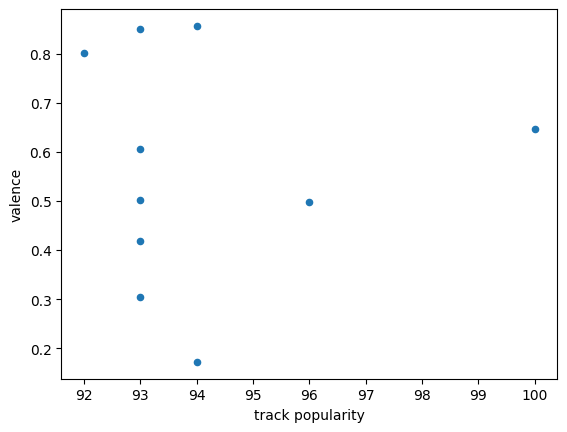
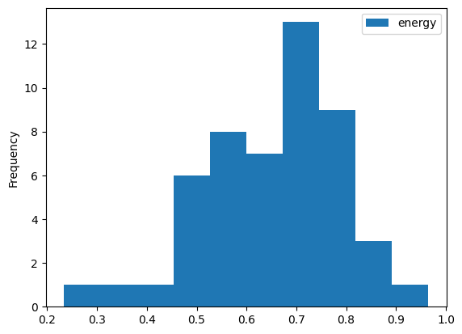
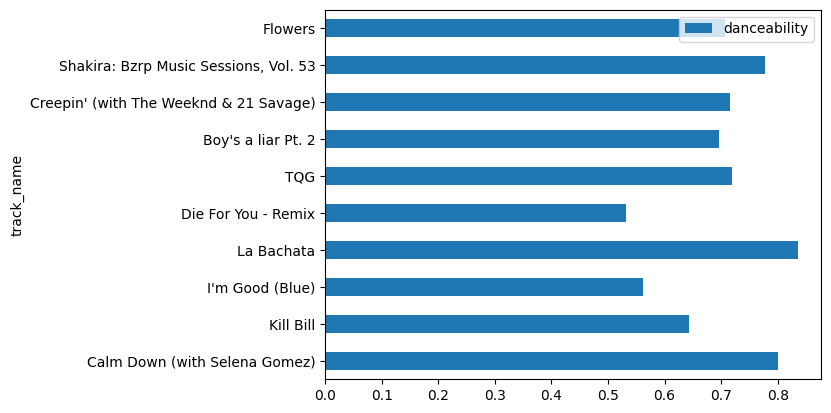

import spotipy
from spotipy.oauth2 import SpotifyClientCredentials
import spotify_key
sp = spotipy.Spotify(auth_manager=SpotifyClientCredentials(client_id=spotify_key.CLIENT_ID,
client_secret=spotify_key.CLIENT_SECRET))Description of data
I will be using Spotify’s API data to address people’s preference on happier or sadder music across the globe, and whether music influences people’s mental health.
Spotify API data This data provides information on music artists, tracks, audio features, and various song attributes from the Spotify Data Catalouge. My motivation for looking at this data is to see what songs are most globally popular, and what the audio features of these popular songs are like.
Exploring the data
Since we are getting data from the web, Spotify’s API, I went to https://developer.spotify.com/dashboard/login and got my credentials to access the data.
Top Songs - Global Playlist
I am interested in what songs are the most popular globally, so I focused on the “Top Songs - Global” playlist which is curated by Spotify already.
playlist_link = "https://open.spotify.com/playlist/37i9dQZEVXbNG2KDcFcKOF?si=1333723a6eff4b7f"
playlist_URI = playlist_link.split("/")[-1].split("?")[0]
track_uris = [x["track"]["uri"] for x in sp.playlist_tracks(playlist_URI)["items"]]artist_name = []
track_name = []
popularity = []
track_id = []
artist_uri = []
artist_info = []
artist_pop = []
artist_genres = []
for track in sp.playlist_tracks(playlist_URI)['items']:
#Track id
track_id.append(track['track']['id'])
#Track name
track_name.append(track["track"]["name"])
#Artist
artist_uri = track["track"]["artists"][0]["uri"]
artist_info = sp.artist(artist_uri)
#Name, popularity, genre
artist_name.append(track["track"]["artists"][0]["name"])
artist_pop.append(artist_info["popularity"])
artist_genres.append(artist_info["genres"])
#Popularity of the track
popularity.append(track["track"]["popularity"])
import pandas as pd
audio = sp.audio_features(track_id)
audio_df = pd.DataFrame(sp.audio_features(track_id))
audio_df = audio_df[['acousticness','danceability','energy','instrumentalness','loudness','speechiness','tempo','valence']]I have gathered the important data needed, which includes artist name, track name, track id, track popularity, artist popularity, artist genre, acousticness, danceability, energy, instrumentalness, loudness, speechiness, tempo, and valence. After gathering specific information, I put it together in a dataframe.
Audio Features
Acousticness represents how acoustic a track is. High confidence a track is acoustic is indicated by 1.0.
Danceability indicates how suitable a track is for dancing based on tempo, beat, strength, and other features. 1.0 is most danceable.
Energy represents the perceived measure of intensity and activity, with high energy track feeling fast and loud.
Instrumentalness indicates whether a track contains mostly instrumentals with no vocals. The higher the value is, the greater likelihood the track has no vocals.
Speechiness is determined by the presence of spoken words. High values represent tracks with mostly spoken words, for example, rap.
Tempo is the estimated BPM (beats per minute) of a track. High BPM indicates faster speed.
Valence describes the positiveness of a track. High valence tracks sound happy and low valence tracks sound sad.
top50_df = pd.DataFrame({'artist_name' : artist_name,
'track_name' : track_name,
'track_id' : track_id,
'track popularity': popularity,
'artist popularity': artist_pop,
'artist genre': artist_genres,
'acousticness': list(audio_df['acousticness']),
'danceability': list(audio_df['danceability']),
'energy': list(audio_df['energy']),
'instrumentalness': list(audio_df['instrumentalness']),
'loudness': list(audio_df['loudness']),
'speechiness': list(audio_df['speechiness']),
'tempo': list(audio_df['tempo']),
'valence': list(audio_df['valence'])})top50_df.head()| artist_name | track_name | track_id | track popularity | artist popularity | artist genre | acousticness | danceability | energy | instrumentalness | loudness | speechiness | tempo | valence | |
|---|---|---|---|---|---|---|---|---|---|---|---|---|---|---|
| 0 | KAROL G | TQG | 0DWdj2oZMBFSzRsi2Cvfzf | 93 | 94 | [reggaeton, reggaeton colombiano, urbano latino] | 0.6730 | 0.720 | 0.630 | 0.000000 | -3.547 | 0.2770 | 179.974 | 0.607 |
| 1 | The Weeknd | Die For You - Remix | 7oDd86yk8itslrA9HRP2ki | 93 | 99 | [canadian contemporary r&b, canadian pop, pop] | 0.2320 | 0.531 | 0.525 | 0.000000 | -6.500 | 0.0671 | 66.900 | 0.502 |
| 2 | Miley Cyrus | Flowers | 0yLdNVWF3Srea0uzk55zFn | 100 | 92 | [pop] | 0.0632 | 0.707 | 0.681 | 0.000005 | -4.325 | 0.0668 | 117.999 | 0.646 |
| 3 | SZA | Kill Bill | 1Qrg8KqiBpW07V7PNxwwwL | 93 | 95 | [pop, r&b] | 0.0521 | 0.644 | 0.735 | 0.144000 | -5.747 | 0.0391 | 88.980 | 0.418 |
| 4 | PinkPantheress | Boy's a liar Pt. 2 | 6AQbmUe0Qwf5PZnt4HmTXv | 94 | 86 | [] | 0.2520 | 0.696 | 0.809 | 0.000128 | -8.254 | 0.0500 | 132.962 | 0.857 |
top50_df.describe()| track popularity | artist popularity | acousticness | danceability | energy | instrumentalness | loudness | speechiness | tempo | valence | |
|---|---|---|---|---|---|---|---|---|---|---|
| count | 50.000000 | 50.000000 | 50.000000 | 50.000000 | 50.000000 | 50.000000 | 50.000000 | 50.000000 | 50.000000 | 50.000000 |
| mean | 87.160000 | 89.040000 | 0.235176 | 0.677320 | 0.652800 | 0.020879 | -6.087180 | 0.093092 | 124.852020 | 0.493070 |
| std | 8.462064 | 6.449047 | 0.216901 | 0.132686 | 0.139459 | 0.098529 | 2.186116 | 0.079960 | 32.138261 | 0.226829 |
| min | 46.000000 | 74.000000 | 0.001460 | 0.442000 | 0.234000 | 0.000000 | -14.520000 | 0.025400 | 66.900000 | 0.038500 |
| 25% | 86.000000 | 85.250000 | 0.063275 | 0.559500 | 0.556500 | 0.000000 | -6.939500 | 0.043475 | 96.332250 | 0.305500 |
| 50% | 89.000000 | 89.000000 | 0.139500 | 0.687500 | 0.676500 | 0.000007 | -5.673500 | 0.057200 | 125.968000 | 0.498000 |
| 75% | 91.000000 | 94.000000 | 0.375750 | 0.781750 | 0.748000 | 0.000263 | -4.892000 | 0.110250 | 142.261000 | 0.620250 |
| max | 100.000000 | 100.000000 | 0.777000 | 0.954000 | 0.965000 | 0.670000 | -1.602000 | 0.326000 | 203.759000 | 0.962000 |
top50_df.sort_values(by = 'track popularity')[-10:].plot.barh(x = 'artist_name', y = 'artist popularity')<AxesSubplot: ylabel='artist_name'>
top50_df.sort_values(by = 'track popularity')[-10:].plot(y = 'valence', x = 'track popularity', kind = "scatter")<AxesSubplot: xlabel='track popularity', ylabel='valence'>
top50_df.plot(y = 'energy', kind = 'hist')<AxesSubplot: ylabel='Frequency'>
top50_df['energy'].describe()count 50.000000
mean 0.652800
std 0.139459
min 0.234000
25% 0.556500
50% 0.676500
75% 0.748000
max 0.965000
Name: energy, dtype: float64top50_df.sort_values(by = 'track popularity')[-10:].plot.barh(x = 'track_name', y = 'danceability')<AxesSubplot: ylabel='track_name'>